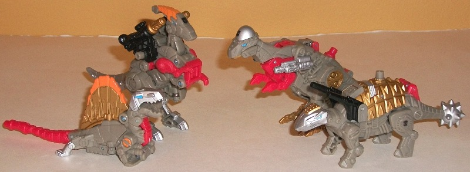
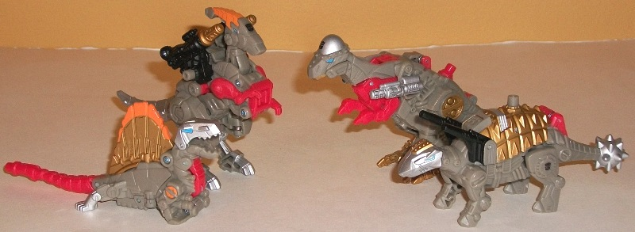
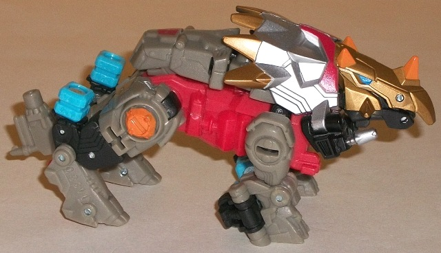
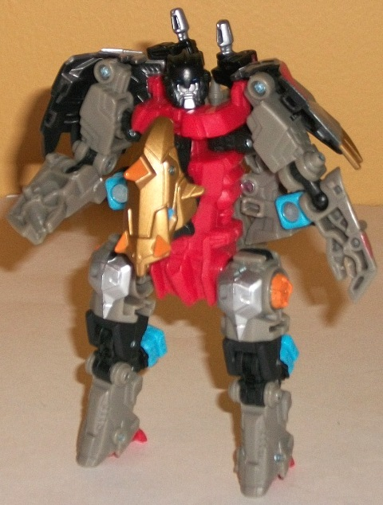
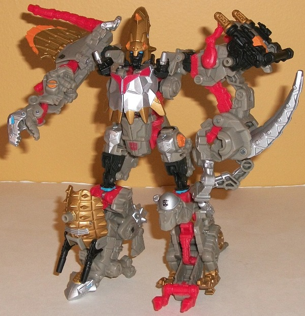

Allegiances : Autobots
Difficulty of Transformations : Automatic
Color Schemes : Light dull brownish gray, light red, pale metallic copper, and some silver, black, light orange, and light sky blue
Individual Rating : 6.3
 Dinobots
Dinobots

Allegiances
: Autobots
Difficulty of Transformations
: Automatic
Color Schemes
: Light dull brownish
gray, light red, pale metallic copper, and some silver, black, light orange,
and light sky blue
Individual Rating
: 6.3
The first of these new
Dinobots I'll be reviewing is the dimetrodon. In beast mode, like most
of the Dinobots, this guy looks pretty great-- the proportions are generally
pretty good (though the back-fin is a little small), and the stylized metallic
look is fantastic. I love all the little mold details everywhere, like
the pistons near the front legs and the segmented bits on the tail. Like
all of the Dinobots, the dimetrodon drone here has a basic light brownish
gray, red, and silver/gold color scheme. This guy in particular has a bit
of orange for accents as well, which helps to pep up the color scheme a
bit-- it looks great altogether. The main color of brownish gray admittedly
isn't very exciting, but there's enough paint apps on this guy that there
aren't large, unbroken areas of the color, so that's not a huge deal (and
of course it fits with the G1 Dinobot color scheme, as well). The sky blue
eyes on the head also contrast very well with the silver maw. I do wish
there were a few paint apps on the completely light red tail, but that's
it. In this mode, the dimetrodon can move at the jaw and at the base of
the tail, but that's it. (There's also a Powerlinx port on the tip of his
tail, though any Minicon plugged in there would look really odd.) This
drone doesn't transform much to form his arm mode-- the front part of the
body just extends down a bit to allow the mouth/jaw to become the hand/claw.
It does the job, I suppose, but I was hoping for a bit more of an "actual"
transformation.
The next drone up is
a parasaurolophus. (Good on Hasbro for trying new dino alt-modes, here.)
This drone has a very aerodynamic, almost horse-like appearance given his
face and leg sculpting, but it works fairly well. His tail is undersized
a little, and the arms are tiny, but otherwise this drone's proportions
are pretty good. He also has two shoulder-mounted guns, so you can't beat
that. (Well, you could if you could actually move said guns-- but you can't.)
The only places of articulation this drone has are at the shoulders, unfortunately.
The paint apps on this drone are a tad more sparse than on the other Dinobots,
as his main body is a bit too much "unbroken" gray, but otherwise the color
scheme looks nice. This drone has two Powerlinx ports, one on the side
of each shoulder-cannon. As is fairly obvious from the beast mode, to transform
this drone into arm mode you plug a combiner port into the large red chest
port, which causes the lower body to extend downwards with the legs forming
claw-hands, while the head folds back to hide itself a little among the
guns and the tail folds up against the side of the arm. Except for the
shoulder, this mode is pretty darned weak-- you REALLY have to squint to
see those dino-legs as some sort of hand-claw-thing. My least favorite
of the Dinobot drones, primarily because of this mode.
Next up is an ankylosaurus.
This drone has my favorite of all the drone's beast modes, as there's no
real extras and the proportions are mostly spot-on all around (he could
stand to be a LITTLE wider in the main body, but that's it). The silver-and-gold
stylized head with the sky blue eyes looks REALLY nice, as does the bronze
ridged back and the silver spiked tail, all of which keep him from looking
too overly gray. The shoulder-mounted cannons are a nice touch, too, to
give this drone a bit of weaponry. Little details like that as well as
the hinges and vents everywhere just really make this guy look fantastic.
The problem? His head can move up and down a little, and his tail can move
downwards a little, but other than that he can't move at ALL in this mode.
His four legs are completely immobile, which is a real shame. As for Powerlinx
ports, this drone has one in the middle of his back. In leg mode, the rear
legs flip down, the back section moves up to form the "knee", and you manually
tilt the tail down and the head up. It's a rather weak foot, clearly formed
from standing up an ankylosaurus on its front end. Still, at least it's
a stable foot, and the head forms a definite "toe".
The last Dinobot drone
is a pachycephalosaurus. Like the other Dinobot drones, he has some excellent
mold detailing, particularly on the legs where there's little "rivet" details
everywhere. His proportions are also generally pretty good, though there's
an odd little gap underneath his neck that's formed from the transformation.
Moreso than any other Dinobot, though, this guy's paint apps are a bit
more scattered, with some pretty large unbroken swaths of gray along his
back and stomach, which look rather boring. The insides of his feet also
aren't painted bronze like the outsides, which just makes them look a little
unfinished. Like other Dinobots, this drone also can sadly barely move
at all in beast mode-- only his arms can move at the shoulders, and even
then only as one (they're both on the same joint). He has one Powerlinx
port-- in the middle of his back. In leg mode, his back moves further back
a little bit, his head dips down to become the "knee", and most of his
stomach and front arms flips down to become the "toes" of the foot. I rather
like that the "bone" skull-dome becomes a kneecap of sorts, but this foot
mode is really, REALLY awkwardly long, and only forms a marginally better
foot than the ankylosaurus drone. At least it forms a very STABLE foot,
though...
I was REALLY excited
when the PCC Dinobots were revealed. Finally, some beast drone Power Core
Combiner limbs! However, although they LOOK quite good in their beast modes
and have great mold and paint detailing, they unfortunately form rather
weak limbs. Even more disappointing, they can barely move at all in their
beast modes, and are essentially nice-looking plastic statues. As playable
toys as they relate to the Power Core gimmick, they're sadly a below-average
drone team.
 Grimstone
Grimstone



Allegiance
: Autobot
Difficulty of Vehicle/Robot Transformation
:
Medium
Difficulty of Torso Transformation
:
Easy
Color Scheme
: Light dull brownish
gray, light red, and some black, light sky blue, silver, light orange,
and pale metallic copper
Individual Rating
: 8.1
Grimstone is the leader
of the Dinobots-- well, THESE Dinobots. And yes, you read right-- GrimSTONE,
not GrimLOCK. Two TOTALLY different guys. With the same general personalities,
and color schemes. Um. Anyways, Grimstone's beast mode is a styracosaurus.
This mode does have few minor kibble problems, mainly dealing with the
combiner ports, which hang off the back of all four of his legs rather
obviously. It's also oddly difficult to get the side-mounted guns into
a position that looks like they're "flush" with any of the surrounding
parts. Other than that, though, this mode is prety well-done. I particularly
like all the mold detailing paint apps on the face and crest-- all those
colors in such a small place REALLY helps Grimstone's look and makes him
look appropriately, well... grim. The overall color scheme is your typical
Dinobot scheme, with gray/silver being the main colors, and red and copper
helping to complete the scheme. Grimstone does have a FEW orange paint
apps, but it's not as noticeable on this guy as on some of his drones.
There's no one area that's too large of a patch of one color, which is
always nice to see. That said, I do wish part of the sides of the big red
piece that forms the "core" of the figure were painted silver, to help
it blend in with the surrounding brownish gray plastic a little better.
Grimstone's Powerlinx port is on the top of his tail, which is a bit odd
of a place. As for articluation, Grimstone's in this mode is okay-- he
can move at the front legs, front knees, back legs (at two points), and
back knees (at three points). I really wish his head could open its jaw
or the tail could move a little, however.
Grimstone's robot mode
is rather compact and stocky-- perfect for a Dinobot. The dino head on
the chest is a bit skinny, and his feet are a tad on the small side, but
that's about all the problems I have with him proportionally. Most of his
beast mode parts fold out of the way (such as his tail and front dino legs
on his back), while others silouhette the mode pretty nicely (like the
halves of his dino head crest on his shoulders). Unfortunately, due to
his transformation and how compact he is, a lot of his parts bash into
each other. Technically, he can move at the neck, shoulders (at two points),
elbows (at two points), hips (at two points), knees (at three points),
and a bit at the ankles. However, due to how much stuff is behind his arms,
they really crash into another part in almost any position except a straightforward
one, and the obvious combiner ports behind his knees restrict movement
a bit there, as well. Heck, it's almost impossible to rotate his shoulders
any more than a smidge forwards or backwards, without scraping some of
his back parts. The parts that form the rear of his feet also make his
feet lean forward a bit, making it look almost like he's tip-toeing. On
the plus side, the head sculpt is quite well-done and sculpted (though
there's a few too many lines near his mouth), and it definitely looks like
it'd fit in with the "traditional" Dinobots' head sculpts.
Grimstone's torso mode
is about halfway between his robot and beast modes, and it's a very unique-looking
mode. The way his long dino face splits open with part of it moving upwards
a bit to reveal the gestalt head is simply ingenious and makes for a very
cool-looking head sculpt. The way the dino frills frame his chest almost
looks like a sort of mini-cloak, which is also awesome. The small guns
also look cool on the sides of his chest. His front dino legs peg in securely
to form the foundation for the shoulder combiner pegs, so no complaints
there. His lower chest/waist also looks nice and proportional. His upper
legs-- obviously formed from his normal robot legs-- are the weakest part
of this mode, but they still get the job done. (The instructions say to
leave the bottom of the dino feet facing forward, but turning them around
to face the back I think looks better and is what I did in the above picture.)
His regular head can be seen rather plainly behind his gestalt head if
you look at this mode from a side or top-down view, but it luckily tends
to stay out of the way from the angles you'd most commonly view Grimstone
in. As for articulation, Grimstone in this mode can move at the shoulders
(at two points), hips (at three points), and knees (at three points), which
is roughly average for a Power Core Combiner.
Grimstone is certainly
one of the (if not THE) most unique Power Core Combiner-- not only because
he's a beast, but also of the incredibly unique torso mode he has. His
torso mode is definitely the best of his three modes, which is why I'm
glad he comes with a drone team of his own. His styracosaurus mode is okay,
though the combiner ports in that mode unceremoniously hang off of him.
His robot mode is definitely the weakest of his modes with all the kibble
problems it has, though even then it's still decent if you're not a stickler
for articulation. And he certainly fits in color-wise with his drones,
another plus. As far as Power Core Combiners go though, he's roughly middle-of-the-road.
Reviews by Beastbot